ESTIMATED TOTAL MEMORY USAGE: 2700 MB (but peaks will hit ~20 GB)
%load_ext autoreload
%autoreload 2
%matplotlib inline
import torch
import torch.nn as nn
import torch.optim as optim
import matplotlib.pylab as plt
import pandas as pd
import numpy as np
from sklearn.neural_network import MLPClassifier, MLPRegressor
import copy
device = torch.device("cuda:0" if torch.cuda.is_available() else "cpu")
print(device)
We want to introduce the basics of neural networks and deep learning. Modern deep learning is a huge field and it’s impossible to cover even all the significant developments in the last 5 years here. But the basics are straightforward.
One big caveat: deep learning is a rapidly evolving field. There are new developments in neural network architectures, novel applications, better optimization techniques, theoretical results justifying why something works etc. daily. It’s a great opportunity to get involved if you find research interesting and there are great online communities (pytorch, fast.ai, paperswithcode, pysyft) that you should get involved with.
Note: Unlike the previous notebooks, this notebook has very few questions. You should study the code, tweak the data, the parameters, and poke the models to understand what’s going on.
Notes: You can install extensions (google for nbextensions) with Jupyter notebooks. I tend to use resuse to display memory usage in the top right corner which really helps.
To run a cell, press: “Shift + Enter”
To add a cell before your current cell, press: “Esc + a”
To add a cell after your current cell, press: “Esc + b”
To delete a cell, press: “Esc + x”
To be able to edit a cell, press: “Enter”
To see more documentation about of a function, type ?function_name
To see source code, type ??function_name
To quickly see possible arguments for a function, type “Shift + Tab” after typing the function name.
Esc and Enter take you into different modes. Press “Esc + h” to see all shortcuts.
We covered the basics of neural networks in the lecture. We also saw applications to two synthetic datasets. The goal in this section is to replicate those results and get a feel for using pytorch.
def generate_binary_data(N_examples=1000, seed=None):
if seed is not None:
np.random.seed(seed)
features = []
target = []
for i in range(N_examples):
#class = 0
r = np.random.uniform()
theta = np.random.uniform(0, 2*np.pi)
features.append([r*np.cos(theta), r*np.sin(theta)])
target.append(0)
#class = 1
r = 3 + np.random.uniform()
theta = np.random.uniform(0, 2*np.pi)
features.append([r*np.cos(theta), r*np.sin(theta)])
target.append(1)
features = np.array(features)
target = np.array(target)
return features, target
features, target = generate_binary_data(seed=100)
def plot_binary_data(features, target):
plt.figure(figsize=(10,10))
plt.plot(features[target==0][:,0], features[target==0][:,1], 'p', color='r', label='0')
plt.plot(features[target==1][:,0], features[target==1][:,1], 'p', color='g', label='1')
plt.xlabel('x')
plt.ylabel('y')
plt.legend()
plot_binary_data(features, target)
We have two features here - x and y. There is a binary target variable that we need to predict. This is essentially the dataset from the logistic regression discussion. Logistic regression will not do well here given that the data is not linearly separable. Transforming the data so we have two features:
and
would make it very easy to use logistic regression (or just a cut at $r = 2$) to separate the two classes but while it is easy for us to visualize the data and guess at the transformation, in high dimensions, we can’t follow the same process.
Let’s implement a feed-forward neural network that takes the two features as input and predicts the probabiliy of being in class 1 as output.
class ClassifierNet(nn.Module): #inherit from nn.Module to define your own architecture
def __init__(self, N_inputs, N_outputs, N_hidden_layers, N_hidden_nodes, activation, output_activation):
super(ClassifierNet, self).__init__()
self.N_inputs = N_inputs #2 in our case
self.N_outputs = N_outputs #1 in our case but can be higher for multi-class classification
self.N_hidden_layers = N_hidden_layers #we'll start by using one hidden layer
self.N_hidden_nodes = N_hidden_nodes #number of nodes in each hidden layer - can extend to passing a list
#Define layers below - pytorch has a lot of layers pre-defined
#use nn.ModuleList or nn.DictList instead of [] or {} - more explanations below
self.layer_list = nn.ModuleList([]) #use just as a python list
for n in range(N_hidden_layers):
if n==0:
self.layer_list.append(nn.Linear(N_inputs, N_hidden_nodes))
else:
self.layer_list.append(nn.Linear(N_hidden_nodes, N_hidden_nodes))
self.output_layer = nn.Linear(N_hidden_nodes, N_outputs)
self.activation = activation #activations at inner nodes
self.output_activation = output_activation #activation at last layer (depends on your problem)
def forward(self, inp):
'''
every neural net in pytorch has its own forward function
this function defines how data flows through the architecture from input to output i.e. the forward propagation part
'''
out = inp
for layer in self.layer_list:
out = layer(out) #calls forward function for each layer (already implemented for us)
out = self.activation(out) #non-linear activation
#pass activations through last/output layer
out = self.output_layer(out)
if self.output_activation is not None:
pred = self.output_activation(out)
else:
pred = out
return pred
There are several ways of specifying a neural net architecture in pytorch. You can work at a high level of abstraction by just listing the layers that you want to getting into the fine details by constructing your own layers (as classes) that can be used in ClassifierNet above.
How does pytorch work? When you define an architecture like the one above, pytorch constructs a graph (nodes and edges) where the nodes are operations on multi-indexed arrays (called tensors).
N_inputs = 2
N_outputs = 1
N_hidden_layers = 1
N_hidden_nodes = 2
activation = nn.Sigmoid()
output_activation = nn.Sigmoid() #we want one probability between 0-1
net = ClassifierNet(N_inputs,
N_outputs,
N_hidden_layers,
N_hidden_nodes,
activation,
output_activation)
Loss function
We first need to pick our loss function. Like we binary classification problems (including logistic regression), we’ll use binary cross-entropy:
where $y_i \in {0,1}$ are the labels and $p_i \in [0,1]$ are the probability predictions.
#look at all available losses (you can always write your own)
torch.nn.*Loss?
criterion = nn.BCELoss()
#get a feel for the loss function
#target = 1 (label = 1)
print(criterion(torch.tensor(1e-2), torch.tensor(1.))) #pred prob = 1e-2 -> BAD
print(criterion(torch.tensor(0.3), torch.tensor(1.))) #pred prob = 0.3 -> BAd
print(criterion(torch.tensor(0.5), torch.tensor(1.))) #pred prob = 0.5 -> Bad
print(criterion(torch.tensor(1.), torch.tensor(1.))) #pred prob = 1.0 -> GREAT!
Optimizer:
So we have the data, the neural net architecture, a loss function to measure how well the model does on our task. We also need a way to do gradient descent.
Recall, we use gradient descent to minimize the loss by computing the first derivative (gradients) and taking a step in the direction opposite (since we are minimizing) to the gradient:
where $w_t$ = weight at time-step t, $L$ = loss, $\eta$ = learning rate.
For our neural network, we first need to calculate the gradients. Thankfully, this is done automatically by pytorch using a procedure called backpropagation. If you are interested in more calculations details, please check “automatic differentiation” and an analytical calculation for a feed-forward network (https://treeinrandomforest.github.io/deep-learning/2018/10/30/backpropagation.html).
The gradients are calculated by calling a function backward on the network, as we’ll see below.
Once the gradients are calculated, we need to update the weights. In practice, there are many heuristics/variants of the update step above that lead to better optimization behavior. A great resource to dive into details is https://ruder.io/optimizing-gradient-descent/. We won’t get into the details here.
We’ll choose what’s called the Adam optimizer.
optim.*?
optimizer = optim.Adam(net.parameters(), lr=1e-2)
We picked a constant learning rate here (which is adjusted internally by Adam) and also passed all the tunable weights in the network by using: net.parameters()
list(net.parameters())
There are 9 free parameters:
A 2x2 matrix (4 parameters) mapping the input layer to the 1 hidden layer.
A 2x1 matrix (2 parameters) mapping the hidden layer to the output layer with one node.
2 biases for the 2 nodes in the hidden layer.
1 bias for the output node in the output layer.
This is a good place to explain why we need to use nn.ModuleList. If we had just used a vanilla python list, net.parameters() would only show weights that are explicitly defined in our net architecture. The weights and biases associated with the layers would NOT show up in net.parameters(). This process of a module higher up in the hierarchy (ClassifierNet) subsuming the weights and biases of modules lower in the hierarchy (layers) is called registering. ModuleList ensures that all the weights/biases are registered as weights and biases of ClassifierNet.
Let’s combine all these elements and train our first neural net.
#convert features and target to torch tensors
features = torch.from_numpy(features)
target = torch.from_numpy(target)
#if have gpu, throw the model, features and labels on it
net = net.to(device)
features = features.to(device).float()
target = target.to(device).float()
We need to do the following steps now:
Compute the gradients for our dataset.
Do gradient descent and update the weights.
Repeat till ??
The problem is there’s no way of knowing when we have converged or are close to the minimum of the loss function. In practice, this means we keep repeating the process above and monitor the loss as well as performance on a hold-out set. When we start over-fitting on the training set, we stop. There are various modifications to this procedure but this is the essence of what we are doing.
Each pass through the whole dataset is called an epoch.
N_epochs = 100
for epoch in range(N_epochs):
out = net(features) #make predictions on the inputs
loss = criterion(out, target) #compute loss on our predictions
optimizer.zero_grad() #set all gradients to 0
loss.backward() #backprop to compute gradients
optimizer.step() #update the weights
if epoch % 10 == 0:
print(f'Loss = {loss:.4f}')
Let’s combined all these elements into a function
def train_model(features, target, model, lr, N_epochs, criterion=nn.BCELoss(), shuffle=False):
#criterion = nn.BCELoss() #binary cross-entropy loss as before
optimizer = torch.optim.Adam(model.parameters(), lr=lr) #Adam optimizer
#if have gpu, throw the model, features and labels on it
model = model.to(device)
features = features.to(device)
target = target.to(device)
for epoch in range(N_epochs):
if shuffle: #should have no effect on gradients in this case
indices = torch.randperm(len(features))
features_shuffled = features[indices]
target_shuffled = target[indices]
else:
features_shuffled = features
target_shuffled = target
out = model(features_shuffled)
#out = out.reshape(out.size(0))
loss = criterion(out, target_shuffled)
if epoch % 1000 == 0:
print(f'epoch = {epoch} loss = {loss}')
optimizer.zero_grad()
loss.backward()
optimizer.step()
pred = model(features_shuffled).reshape(len(target))
pred[pred>0.5] = 1
pred[pred<=0.5] = 0
#print(f'Accuracy = {accuracy}')
model = model.to('cpu')
features = features.to('cpu')
target = target.to('cpu')
return model
Exercise: Train the model and vary the number of hidden nodes and see what happens to the loss. Can you explain this behavior?
N_inputs = 2
N_outputs = 1
N_hidden_layers = 1
N_hidden_nodes = 1 #<--- play with this
activation = nn.Sigmoid()
output_activation = nn.Sigmoid() #we want one probability between 0-1
net = ClassifierNet(N_inputs,
N_outputs,
N_hidden_layers,
N_hidden_nodes,
activation,
output_activation)
net = train_model(features, target, net, 1e-3, 10000)
N_inputs = 2
N_outputs = 1
N_hidden_layers = 1
N_hidden_nodes = 2 #<--- play with this
activation = nn.Sigmoid()
output_activation = nn.Sigmoid() #we want one probability between 0-1
net = ClassifierNet(N_inputs,
N_outputs,
N_hidden_layers,
N_hidden_nodes,
activation,
output_activation)
net = train_model(features, target, net, 1e-3, 10000)
N_inputs = 2
N_outputs = 1
N_hidden_layers = 1
N_hidden_nodes = 3 #<--- play with this
activation = nn.Sigmoid()
output_activation = nn.Sigmoid() #we want one probability between 0-1
net = ClassifierNet(N_inputs,
N_outputs,
N_hidden_layers,
N_hidden_nodes,
activation,
output_activation)
net = train_model(features, target, net, 1e-3, 10000)
There seems to be some “magic” behavior when we increase the number of nodes in the first (and only) hidden layer from 2 to 3. Loss suddenly goes down dramatically. At this stage, we should explore why that’s happening.
For every node in the hidden layer, we have a mapping from the input to that node:
where $w_1, w_2, b$ are specific to that hidden node. We can plot the decision line in this case:
Unlike logistic regression, this is not actually a decision line. Points on one side are not classified as 0 and points on the other side as 1 (if the threshold = 0.5). Instead this line should be thought of as one defining a new coordinate-system. Instead of x and y coordinates, every hidden node induces a straight line and a new coordinate, say $\alpha_i$. So if we have 3 hidden nodes, we are mapping the 2-dimensional input space into a 3-dimensional space where the coordinates $\alpha_1, \alpha_2, \alpha_3$ for each point depend on which side of the 3 lines induced as mentioned above, it lies.
params = list(net.parameters())
print(params[0]) #3x2 matrix
print(params[1]) #3 biases
features = features.detach().cpu().numpy() #detach from pytorch computational graph, bring back to cpu, convert to numpy
target = target.detach().cpu().numpy()
fig = plt.figure(figsize=(10,10))
ax = fig.add_subplot()
#plot raw data
ax.plot(features[target==0][:,0], features[target==0][:,1], 'p', color='r', label='0')
ax.plot(features[target==1][:,0], features[target==1][:,1], 'p', color='g', label='1')
plt.xlabel('x')
plt.ylabel('y')
#get weights and biases
weights = params[0].detach().numpy()
biases = params[1].detach().numpy()
#plot straight lines
x_min, x_max = features[:,0].min(), features[:,0].max()
y_lim_min, y_lim_max = features[:,1].min(), features[:,1].max()
for i in range(weights.shape[0]): #loop over each hidden node in the one hidden layer
coef = weights[i]
intercept = biases[i]
y_min = (-intercept - coef[0]*x_min)/coef[1]
y_max = (-intercept - coef[0]*x_max)/coef[1]
ax.plot([x_min, x_max], [y_min, y_max])
ax.set_xlim(x_min, x_max)
ax.set_ylim(y_lim_min, y_lim_max)
ax.legend(framealpha=0)
This is the plot we showed in the lecture. For every hidden node in the hidden layer, we have a straight line. The colors of the three lines above are orange, green and blue and that’s what we’ll call our new coordinates.
Suppose you pick a point in the red region:
It lies to the right of the orange line
It lies to the bottom of the green line
It lies to the top of the blue line.
(These directions might change because of inherent randomness during training - weight initializations here).
On the other hand, we have 6 green regions. If you start walking clockwise from the top green section, every time you cross a straight line, you walk into a new region. Each time you walk into a new region, you flip the coordinate of one of the 3 lines. Either you go from right to left of the orange line, bottom to top of the green line or top to bottom of the blue line.
So instead of describing each point by two coordinates (x, y), we can describe it by (orange status, green status, blue status). We happen to have 7 such regions here - with 1 being purely occupied by the red points and the other 7 by green points.
This might be become cleared from a 3-dimensional plot.
from mpl_toolkits.mplot3d import Axes3D
#get hidden layer activations for all inputs
features_layer1_3d = net.activation(net.layer_list[0](torch.tensor(features))).detach().numpy()
print(features_layer1_3d[0:10])
fig = plt.figure(figsize=(10,10))
ax = fig.add_subplot(projection='3d')
ax.plot(features_layer1_3d[target==0][:,0], features_layer1_3d[target==0][:,1], features_layer1_3d[target==0][:,2], 'p', color ='r', label='0')
ax.plot(features_layer1_3d[target==1][:,0], features_layer1_3d[target==1][:,1], features_layer1_3d[target==1][:,2], 'p', color ='g', label='1')
ax.legend(framealpha=0)
At this stage, a simple linear classifier can draw a linear decision boundary (a plane) to separate the red points from the green points. Also, these points lie in the unit cube (cube with sides of length=1) since we are using sigmoid activations. Whenever the activations get saturated (close to 0 or 1), then we see points on the edges and corners of the cube.
Question: Switch the activation from sigmoid to relu (nn.ReLU()). Does the loss still essentially become zero on the train set? If not, try increasing N_hidden_nodes. At what point does the loss actually become close to 0?
N_inputs = 2
N_outputs = 1
N_hidden_layers = 1
N_hidden_nodes = 5 #<---- play with this
activation = nn.ReLU()
output_activation = nn.Sigmoid() #we want one probability between 0-1
net = ClassifierNet(N_inputs,
N_outputs,
N_hidden_layers,
N_hidden_nodes,
activation,
output_activation)
features = torch.tensor(features)
target = torch.tensor(target)
net = train_model(features, target, net, 1e-3, 10000)
Question: Remake the 3d plot but by trying 3 coordinates out of the N_hidden_nodes coordinates you found above?
features = features.detach().cpu().numpy() #detach from pytorch computational graph, bring back to cpu, convert to numpy
target = target.detach().cpu().numpy()
#get hidden layer activations for all inputs
features_layer1_3d = net.activation(net.layer_list[0](torch.tensor(features))).detach().numpy()
print(features_layer1_3d[0:10])
fig = plt.figure(figsize=(10,10))
ax = fig.add_subplot(projection='3d')
COORD1 = 0
COORD2 = 1
COORD3 = 2
ax.plot(features_layer1_3d[target==0][:,COORD1], features_layer1_3d[target==0][:,COORD2], features_layer1_3d[target==0][:,COORD3], 'p', color ='r', label='0')
ax.plot(features_layer1_3d[target==1][:,COORD1], features_layer1_3d[target==1][:,COORD2], features_layer1_3d[target==1][:,COORD3], 'p', color ='g', label='1')
ax.legend(framealpha=0)
fig = plt.figure(figsize=(10,10))
ax = fig.add_subplot(projection='3d')
COORD1 = 0
COORD2 = 1
COORD3 = 3
ax.plot(features_layer1_3d[target==0][:,COORD1], features_layer1_3d[target==0][:,COORD2], features_layer1_3d[target==0][:,COORD3], 'p', color ='r', label='0')
ax.plot(features_layer1_3d[target==1][:,COORD1], features_layer1_3d[target==1][:,COORD2], features_layer1_3d[target==1][:,COORD3], 'p', color ='g', label='1')
ax.legend(framealpha=0)
fig = plt.figure(figsize=(10,10))
ax = fig.add_subplot(projection='3d')
COORD1 = 0
COORD2 = 2
COORD3 = 3
ax.plot(features_layer1_3d[target==0][:,COORD1], features_layer1_3d[target==0][:,COORD2], features_layer1_3d[target==0][:,COORD3], 'p', color ='r', label='0')
ax.plot(features_layer1_3d[target==1][:,COORD1], features_layer1_3d[target==1][:,COORD2], features_layer1_3d[target==1][:,COORD3], 'p', color ='g', label='1')
ax.legend(framealpha=0)
fig = plt.figure(figsize=(10,10))
ax = fig.add_subplot(projection='3d')
COORD1 = 1
COORD2 = 2
COORD3 = 3
ax.plot(features_layer1_3d[target==0][:,COORD1], features_layer1_3d[target==0][:,COORD2], features_layer1_3d[target==0][:,COORD3], 'p', color ='r', label='0')
ax.plot(features_layer1_3d[target==1][:,COORD1], features_layer1_3d[target==1][:,COORD2], features_layer1_3d[target==1][:,COORD3], 'p', color ='g', label='1')
ax.legend(framealpha=0)
Draw all the plots
import itertools
for comb in itertools.combinations(np.arange(N_hidden_nodes), 3):
fig = plt.figure(figsize=(10,10))
ax = fig.add_subplot(projection='3d')
COORD1 = comb[0]
COORD2 = comb[1]
COORD3 = comb[2]
ax.plot(features_layer1_3d[target==0][:,COORD1], features_layer1_3d[target==0][:,COORD2], features_layer1_3d[target==0][:,COORD3], 'p', color ='r', label='0')
ax.plot(features_layer1_3d[target==1][:,COORD1], features_layer1_3d[target==1][:,COORD2], features_layer1_3d[target==1][:,COORD3], 'p', color ='g', label='1')
ax.legend(framealpha=0)
plt.title(f'COORDINATES = {comb}')
Note: Generally it is a good idea to use a linear layer for the output layer and use BCEWithLogitsLoss to avoid numerical instabilities. We will do this later for multi-class classification.
Clear variables
features = None
features_layer1_3d = None
target = None
net = None
def generate_regression_data(L=10, stepsize=0.1):
x = np.arange(-L, L, stepsize)
y = np.sin(3*x) * np.exp(-x / 8.)
return x, y
def plot_regression_data(x, y):
plt.figure(figsize=(10,10))
plt.plot(x, y)
plt.xlabel('x')
plt.ylabel('y')
x, y = generate_regression_data()
plot_regression_data(x, y)
This is a pretty different problem in some ways. We now have one input - x and one output - y. But looked at another way, we simply change the number of inputs in our neural network to 1 and we change the output activation to be a linear function. Why linear? Because in principle, the output (y) can be unbounded i.e. any real value.
We also need to change the loss function. While binary cross-entropy is appropriate for a classification problem, we need something else for a regression problem. We’ll use mean-squared error:
Try modifying N_hidden_nodes from 1 through 10 and see what happens to the loss
N_inputs = 1
N_outputs = 1
N_hidden_layers = 1
N_hidden_nodes = 10 #<--- play with this
activation = nn.Sigmoid()
output_activation = None #we want one probability between 0-1
net = ClassifierNet(N_inputs,
N_outputs,
N_hidden_layers,
N_hidden_nodes,
activation,
output_activation)
features = torch.tensor(x).float().reshape(len(x), 1)
target = torch.tensor(y).float().reshape(len(y), 1)
net = train_model(features, target, net, 1e-2, 20000, criterion=nn.MSELoss())
pred = net(features).cpu().detach().numpy().reshape(len(features))
plt.plot(x, y)
plt.plot(x, pred)
As before, we need to understand what the model is doing. As before, let’s consider the mapping from the input node to one node of the hidden layer. In this case, we have the mapping:
where $w_i, b_i$ are the weight and bias associated with each node of the hidden layer. This defines a “decision” boundary where:
This is just a value $\delta_{i} \equiv -\frac{b_i}{w_i}$.
For each hidden node $i$, we can calculate one such threshold, $\delta_i$.
As we walk along the x-axis from the left to right, we will cross each threshold one by one. On crossing each threshold, one hidden node switches i.e. goes from $0 \rightarrow 1$ or $1 \rightarrow 0$. What effect does this have on the output or prediction?
Since the last layer is linear, its output is:
$y = v_1 h_1 + v_2 h_2 + \ldots + v_n h_n + c$
where $v_i$ are the weights from the hidden layer to the output node, $c$ is the bias on the output node, and $h_i$ are the activations on the hidden nodes. These activations can smoothly vary between 0 and 1 according to the sigmoid function.
So, when we cross a threshold, one of the $h_j$ values eithers turns off or turns on. This has the effect of adding or subtracting constant $v_k$ values from the output if the kth hidden node, $h_k$ is switching on/off.
This means that as we add more hidden nodes, we can divide the domain (the x values) into more fine-grained intervals that can be assigned a single value by the neural network. In practice, there is a smooth interpolation.
Question: Suppose instead of the sigmoid activations, we used a binary threshold:
then we would get a piece-wise constant prediction from our trained network. Plot that piecewise function as a function of $x$.
activations = net.activation(net.layer_list[0](features))
print(activations[0:10])
binary_activations = nn.Threshold(0.5, 0)(activations)/activations
print(binary_activations[0:10])
binary_pred = net.output_layer(binary_activations)
plt.figure(figsize=(10,10))
plt.plot(x,y, label='data')
plt.plot(x, binary_pred.cpu().detach().numpy(), label='binary')
plt.plot(x, pred, color='r', label='pred')
plt.legend()
Question: Why does the left part of the function fit so well but the right side is always compromised? Hint: think of the loss function.
The most likely reason is that the loss function is sensitive to the scale of the $y$ values. A 10% deviation between the y-value and the prediction near x = -10 has a larger absolute value than a 10% deviation near say, x = 5.
Question: Can you think of ways to test this hypothesis?
There are a couple of things you could do. One is to flip the function from left to right and re-train the model. In this case, the right side should start fitting better.
Another option is to change the loss function to percentage error i.e.:
but this is probably much harder to optimize.
y = copy.copy(y[::-1])
plt.plot(x, y)
N_inputs = 1
N_outputs = 1
N_hidden_layers = 1
N_hidden_nodes = 10
activation = nn.Sigmoid()
output_activation = None #we want one probability between 0-1
net = ClassifierNet(N_inputs,
N_outputs,
N_hidden_layers,
N_hidden_nodes,
activation,
output_activation)
features = torch.tensor(x).float().reshape(len(x), 1)
target = torch.tensor(y).float().reshape(len(y), 1)
net = train_model(features, target, net, 1e-2, 14000, criterion=nn.MSELoss())
pred = net(features).cpu().detach().numpy().reshape(len(features))
plt.figure(figsize=(10,10))
plt.plot(x, y)
plt.plot(x, pred)
As expected, now the right side of the function fits well.
activations = net.activation(net.layer_list[0](features))
binary_activations = nn.Threshold(0.5, 0)(activations)/activations
binary_pred = net.output_layer(binary_activations)
plt.figure(figsize=(10,10))
plt.plot(x,y, label='data')
plt.plot(x, binary_pred.cpu().detach().numpy(), label='binary')
plt.plot(x, pred, color='r', label='pred')
plt.legend()
At this stage, you should restart the kernel and clear the output since we don’t need anything from before.
One of the most successful applications of deep learning has been to computer vision. A central task of computer vision is image classification. This is the task of assigning exactly one of multiple labels to an image.
pytorch provides a package called torchvision which includes datasets, some modern neural network architectures as well as helper functions for images.
import torch
import torch.nn as nn
import torch.optim as optim
import matplotlib.pylab as plt
import pandas as pd
import numpy as np
from sklearn.neural_network import MLPClassifier, MLPRegressor
import copy
device = torch.device("cuda:0" if torch.cuda.is_available() else "cpu")
print(device)
cuda:0
from torchvision.datasets import MNIST
from torchvision import transforms
DOWNLOAD_PATH = "../data/MNIST"
mnist_train = MNIST(DOWNLOAD_PATH,
train=True,
download=True,
transform = transforms.Compose([transforms.ToTensor()]))
mnist_test = MNIST(DOWNLOAD_PATH,
train=False,
download=True,
transform = transforms.Compose([transforms.ToTensor()]))
You will most likely run into memory issues between the data and the weights/biases of your neural network. Let’s instead sample 1/10th the dataset.
print(mnist_train.data.shape)
print(mnist_train.targets.shape)
N_choose = 6000
chosen_ids = np.random.choice(np.arange(mnist_train.data.shape[0]), N_choose)
print(chosen_ids[0:10])
print(mnist_train.data[chosen_ids, :, :].shape)
print(mnist_train.targets[chosen_ids].shape)
mnist_train.data = mnist_train.data[chosen_ids, :, :]
mnist_train.targets = mnist_train.targets[chosen_ids]
torch.Size([60000, 28, 28])
torch.Size([60000])
[24002 52251 6159 49269 12283 51361 3932 7264 33050 14980]
torch.Size([6000, 28, 28])
torch.Size([6000])
print(mnist_test.data.shape)
print(mnist_test.targets.shape)
N_choose = 1000
chosen_ids = np.random.choice(np.arange(mnist_test.data.shape[0]), N_choose)
print(chosen_ids[0:10])
print(mnist_test.data[chosen_ids, :, :].shape)
print(mnist_test.targets[chosen_ids].shape)
mnist_test.data = mnist_test.data[chosen_ids, :, :]
mnist_test.targets = mnist_test.targets[chosen_ids]
torch.Size([10000, 28, 28])
torch.Size([10000])
[8114 643 5401 4385 169 5141 9096 3678 8051 95]
torch.Size([1000, 28, 28])
torch.Size([1000])
MNIST is one of the classic image datasets and consists of 28 x 28 pixel images of handwritten digits. We downloaded both the train and test sets. Transforms defined under target_transform will be applied to each example. In this example, we want tensors and not images which is what the transforms do.
The train set consists of 60000 images.
mnist_train.data.shape
torch.Size([6000, 28, 28])
mnist_train.data[0]
tensor([[ 0, 0, 0, 0, 0, 0, 0, 0, 0, 0, 0, 0, 0, 0,
0, 0, 0, 0, 0, 0, 0, 0, 0, 0, 0, 0, 0, 0],
[ 0, 0, 0, 0, 0, 0, 0, 0, 0, 0, 0, 0, 0, 0,
0, 0, 0, 0, 0, 0, 0, 0, 0, 0, 0, 0, 0, 0],
[ 0, 0, 0, 0, 0, 0, 0, 0, 0, 0, 0, 0, 0, 0,
0, 0, 0, 0, 0, 0, 0, 0, 0, 0, 0, 0, 0, 0],
[ 0, 0, 0, 0, 0, 0, 0, 0, 0, 0, 0, 0, 0, 0,
0, 0, 0, 0, 0, 0, 0, 0, 0, 0, 0, 0, 0, 0],
[ 0, 0, 0, 0, 0, 0, 0, 0, 0, 0, 0, 0, 58, 109,
89, 171, 192, 37, 0, 0, 0, 0, 0, 0, 0, 0, 0, 0],
[ 0, 0, 0, 0, 0, 0, 0, 0, 0, 0, 0, 63, 244, 253,
254, 253, 254, 243, 0, 0, 0, 0, 0, 0, 0, 0, 0, 0],
[ 0, 0, 0, 0, 0, 0, 0, 0, 0, 0, 16, 223, 255, 243,
115, 94, 244, 254, 125, 0, 0, 0, 0, 0, 0, 0, 0, 0],
[ 0, 0, 0, 0, 0, 0, 0, 0, 0, 0, 171, 253, 191, 36,
0, 0, 160, 253, 207, 0, 0, 0, 0, 0, 0, 0, 0, 0],
[ 0, 0, 0, 0, 0, 0, 0, 0, 0, 84, 254, 98, 0, 0,
0, 0, 37, 253, 217, 0, 0, 0, 0, 0, 0, 0, 0, 0],
[ 0, 0, 0, 0, 0, 0, 0, 0, 0, 145, 254, 57, 0, 0,
0, 0, 6, 222, 238, 21, 0, 0, 0, 0, 0, 0, 0, 0],
[ 0, 0, 0, 0, 0, 0, 0, 0, 0, 145, 255, 212, 21, 0,
0, 21, 171, 254, 125, 0, 0, 0, 0, 0, 0, 0, 0, 0],
[ 0, 0, 0, 0, 0, 0, 0, 0, 0, 83, 254, 253, 228, 166,
145, 228, 243, 98, 0, 0, 0, 0, 0, 0, 0, 0, 0, 0],
[ 0, 0, 0, 0, 0, 0, 0, 0, 0, 0, 84, 228, 255, 254,
254, 191, 21, 0, 0, 0, 0, 0, 0, 0, 0, 0, 0, 0],
[ 0, 0, 0, 0, 0, 0, 0, 0, 0, 0, 0, 63, 254, 253,
254, 253, 187, 42, 0, 0, 0, 0, 0, 0, 0, 0, 0, 0],
[ 0, 0, 0, 0, 0, 0, 0, 0, 0, 0, 37, 233, 228, 63,
135, 238, 254, 233, 0, 0, 0, 0, 0, 0, 0, 0, 0, 0],
[ 0, 0, 0, 0, 0, 0, 0, 0, 0, 21, 223, 232, 42, 0,
0, 42, 254, 253, 84, 0, 0, 0, 0, 0, 0, 0, 0, 0],
[ 0, 0, 0, 0, 0, 0, 0, 0, 0, 135, 249, 52, 0, 0,
0, 0, 171, 254, 145, 0, 0, 0, 0, 0, 0, 0, 0, 0],
[ 0, 0, 0, 0, 0, 0, 0, 0, 0, 217, 217, 0, 0, 0,
0, 0, 68, 253, 166, 0, 0, 0, 0, 0, 0, 0, 0, 0],
[ 0, 0, 0, 0, 0, 0, 0, 0, 16, 233, 218, 0, 0, 0,
0, 0, 21, 238, 218, 0, 0, 0, 0, 0, 0, 0, 0, 0],
[ 0, 0, 0, 0, 0, 0, 0, 0, 6, 202, 249, 94, 0, 0,
0, 0, 0, 197, 238, 21, 0, 0, 0, 0, 0, 0, 0, 0],
[ 0, 0, 0, 0, 0, 0, 0, 0, 0, 94, 254, 233, 42, 0,
0, 0, 27, 233, 156, 0, 0, 0, 0, 0, 0, 0, 0, 0],
[ 0, 0, 0, 0, 0, 0, 0, 0, 0, 52, 254, 253, 238, 155,
135, 135, 213, 253, 73, 0, 0, 0, 0, 0, 0, 0, 0, 0],
[ 0, 0, 0, 0, 0, 0, 0, 0, 0, 0, 135, 228, 254, 254,
254, 254, 254, 160, 0, 0, 0, 0, 0, 0, 0, 0, 0, 0],
[ 0, 0, 0, 0, 0, 0, 0, 0, 0, 0, 0, 11, 88, 170,
181, 201, 139, 5, 0, 0, 0, 0, 0, 0, 0, 0, 0, 0],
[ 0, 0, 0, 0, 0, 0, 0, 0, 0, 0, 0, 0, 0, 0,
0, 0, 0, 0, 0, 0, 0, 0, 0, 0, 0, 0, 0, 0],
[ 0, 0, 0, 0, 0, 0, 0, 0, 0, 0, 0, 0, 0, 0,
0, 0, 0, 0, 0, 0, 0, 0, 0, 0, 0, 0, 0, 0],
[ 0, 0, 0, 0, 0, 0, 0, 0, 0, 0, 0, 0, 0, 0,
0, 0, 0, 0, 0, 0, 0, 0, 0, 0, 0, 0, 0, 0],
[ 0, 0, 0, 0, 0, 0, 0, 0, 0, 0, 0, 0, 0, 0,
0, 0, 0, 0, 0, 0, 0, 0, 0, 0, 0, 0, 0, 0]],
dtype=torch.uint8)
plt.imshow(mnist_train.data[0])
<matplotlib.image.AxesImage at 0x7fb450579dd0>
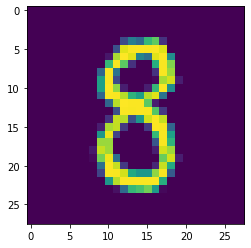
There are 10 unique labels - 0 through 9
mnist_train.targets[0:10]
tensor([8, 2, 6, 3, 6, 7, 6, 9, 7, 1])
The labels are roughly equally/uniformly distributed
np.unique(mnist_train.targets, return_counts=True)
(array([0, 1, 2, 3, 4, 5, 6, 7, 8, 9]),
array([612, 649, 594, 635, 580, 521, 591, 640, 557, 621]))
The test set consists of 10000 images.
mnist_test.data.shape
torch.Size([1000, 28, 28])
plt.imshow(mnist_test.data[10])
<matplotlib.image.AxesImage at 0x7fb43bdd1e90>
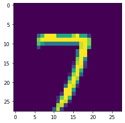
Same labels
mnist_test.targets[0:10]
tensor([0, 2, 6, 2, 4, 0, 1, 5, 4, 4])
Pretty equally distributed.
np.unique(mnist_test.targets, return_counts=True)
(array([0, 1, 2, 3, 4, 5, 6, 7, 8, 9]),
array([113, 111, 103, 90, 88, 93, 102, 97, 102, 101]))
Image Classifier:
We first have to pick an architecture. The first one we’ll pick is a feed-forward neural network like the one we used in the exercises above. This time I am going to use a higher abstraction to define the network.
#convert 28x28 image -> 784-dimensional flattened vector
class Flatten(nn.Module):
def __init__(self):
super(Flatten, self).__init__()
def forward(self, inp):
return inp.flatten(start_dim=1, end_dim=2)
Flatten()(mnist_train.data[0:10]).shape
torch.Size([10, 784])
Architecture definition using nn.Sequential. You can just list the layers in a sequence. We carry out the following steps:
Flatten each image into a 784 dimensional vector
Map the image to a 100-dimensional vector using a linear layer
Apply a relu non-linearity
Map the 100-dimensional vector into a 10-dimensional output layer since we have 10 possible targets.
Apply a softmax activation to convert the 10 numbers into a probability distribution that assigns the probability the image belonging to each class (0 through 9)
A softmax activation takes N numbers $a_1, \ldots, a_{10}$ and converts them to a probability distribution. The first step is to ensure the numbers are positive (since probabilities cannot be negative). This is done by exponentiation.
The next step is to normalize the numbers i.e. ensure they add up to 1. This is very straightforward. We just divide each score by the sum of scores:
This is the softmax function. If you have done statistical physics (physics of systems with very large number of interacting constituents), you probably have seen the Boltzmann distribution:
which gives the probability that a system with N energy levels is in the state with energy $i$ when it is in equilibrium with a thermal bath at temperature $T = \frac{1}{k_B\beta}$. This is the only probability distribution that is invariant to constant shifts in energy: $E_i \rightarrow E_i + \Delta$.
Network definition
image_ff_net = nn.Sequential(Flatten(),
nn.Linear(784, 100),
nn.ReLU(),
nn.Linear(100, 10),
nn.Softmax(dim=1) #convert 10-dim activation to probability distribution
)
Let’s ensure the data flows through our neural network and check the dimensions. As before, the neural net object is a python callable.
image_ff_net(mnist_train.data[0:12].float()).shape
torch.Size([12, 10])
We get a 10-dimensional output as expected.
Question: Check that the outputs for each image are actually a probability distribution (the numbers add up to 1).
image_ff_net(mnist_train.data[0:10].float()).sum(dim=1)
tensor([1.0000, 1.0000, 1.0000, 1.0000, 1.0000, 1.0000, 1.0000, 1.0000, 1.0000,
1.0000], grad_fn=<SumBackward2>)
Question: We have an architecture for our neural network but we now need to decide what loss to pick. Unlike the classification problem earlier which had two classes, we have 10 classes here. Take a look at the pytorch documentation - what loss do you think we should pick to model this problem?
We used cross-entropy loss on days 2 and 3. We need the same loss here. Pytorch provides NLLLoss (negative log likelihood) as well as CrossEntropyLoss.
Question: Look at the documentation for both of these loss functions. Which one should we pick? Do we need to make any modifications to our architecture?
We will use the Cross-entropy Loss which can work with the raw scores (without a softmax layer).
image_ff_net = nn.Sequential(Flatten(),
nn.Linear(784, 100),
nn.ReLU(),
nn.Linear(100, 10),
)
Now we’ll get raw unnormalized scores that were used to compute the probabilities. We should use nn.CrossEntropyLoss in this case.
image_ff_net(mnist_train.data[0:12].float())
tensor([[ -5.1777, -0.6201, 25.9891, -8.4560, -20.0874, -12.2496, -30.4641,
-5.7812, -29.5144, -25.6087],
[ -0.9163, 10.6537, 11.8084, -42.2968, -37.6916, -7.6395, -0.4226,
54.1233, -28.6775, -25.0201],
[ 6.6012, 8.0610, 19.0215, -42.6030, -31.1710, -49.4646, -23.2548,
18.0158, -43.1084, -32.7332],
[ -0.1542, -11.7846, 27.2837, 10.4074, -1.8003, -1.1639, -19.6143,
-36.8690, -24.0210, -11.8336],
[ 18.4836, 3.1884, 29.7015, -14.4818, -50.4116, -1.1841, -37.0231,
10.3217, -33.0538, -32.8229],
[ -8.2850, -2.3705, 32.7147, -27.5788, -19.5514, -16.8190, -39.3709,
37.0356, -17.2178, -29.3966],
[ -4.7255, 11.9930, 12.1769, -18.5138, -14.0662, -21.8685, -1.4869,
6.5271, -22.4318, -39.7512],
[ -1.1190, -11.1115, 50.7417, -5.4773, -19.8561, -24.5303, -17.0328,
2.3894, -3.7578, -13.4913],
[ -3.1977, -7.0141, 41.0611, 6.5131, -25.9880, -34.2578, -18.2620,
21.9397, -33.4613, -31.8249],
[-18.4246, -15.0498, 41.5819, -1.8826, -31.9494, -19.8510, -18.1790,
2.5187, -8.6216, -13.0246],
[ 1.8101, -24.6803, 10.9292, -11.9256, -4.4042, -0.5083, -41.4918,
0.6031, -25.1025, -14.8685],
[ -2.0029, -1.1029, 19.0026, -0.8711, 8.5838, -4.4992, -15.5333,
-14.7002, -20.8877, -24.2197]], grad_fn=<AddmmBackward>)
loss = nn.CrossEntropyLoss()
Training: We have an architecture, the data, an appropriate loss. Now we need to loop over the images, use the loss to compare the predictions to the targets, compute the gradients and update the weights.
In our previous examples, we had N_epoch passes over our dataset and each time, we computed predictions for the full dataset. This is impractical as datasets gets larger. Instead, we need to split the data into batches of a fixed size, compute the loss, the gradients and update the weights for each batch.
pytorch provides a DataLoader class that makes it easy to generate batches from your dataset.
Optional:
Let’s analyze how using batches can be different from using the full dataset. Suppose our data has 10,000 rows but we use batches of size 100 (usually we pick powers of 2 for the GPU but this is just an example). Statistically, our goal is always to compute the gradient:
for all the weights $w_i$. By weights here, I mean both the weights and biases and any other free or tunable parameters in our model.
In practice, the loss is a sum over all the examples in our dataset:
where $p_i$ = prediction for ith example, $t_i$ = target/label for ith example. So the derivative is:
In other words, our goal is to calculate this quantity but $N$ is too large. So we pick a randomly chosen subset of size 100 and only average the gradients over those examples. As an analogy, if our task was to measure the average height of all the people in the world which is impractical, we would pick randomly chosen subsets, say of 10,000 people and measure their average heights.
Of course, as we make the subset smaller, the estimate we get will be noisier i.e. it has a greater chance of higher deviation from the actual value (height or gradient). Is this good or bad? It depends. In our case, we are optimizing a function (the loss) that has multiple local minima and saddle points. It is easy to get stuck in regions of the loss space/surface. Having noisy gradients can help with escaping those local minima just because we’ll not always be moving in the direction of the true gradient but a noisy estimate.
Some commonly used terminology in case you read papers/articles:
(Full) Gradient Descent - compute the gradients over the full dataset. Memory-intensive for larger datasets. This is what we did with our toy examples above.
Mini-batch Gradient Descent - use randomly chosen samples of fixed size as your data. Noisier gradients, more frequent updates to your model, memory efficient.
Stochastic Gradient Descent - Mini-batch gradient descent with batch size = 1. Very noisy estimate, “online” updates to your model, can be hard to converge.
There are some fascinating papers on more theoretical investigations into the loss surface and the behavior of gradient descent. Here are some examples:
https://papers.nips.cc/paper/7875-visualizing-the-loss-landscape-of-neural-nets.pdf
https://arxiv.org/abs/1811.03804
https://arxiv.org/pdf/1904.06963.pdf
End of optional section
BATCH_SIZE = 16 #number of examples to compute gradients over (a batch)
#python convenience classes to sample and create batches
train_dataloader = torch.utils.data.DataLoader(mnist_train,
batch_size=BATCH_SIZE,
shuffle=True, #shuffle data
num_workers=8,
pin_memory=True
)
test_dataloader = torch.utils.data.DataLoader(mnist_test,
batch_size=BATCH_SIZE,
shuffle=True, #shuffle data
num_workers=8,
pin_memory=True
)
idx, (data_example, target_example) = next(enumerate(train_dataloader))
print(idx)
print(data_example.shape)
print(target_example.shape)
0
torch.Size([16, 1, 28, 28])
torch.Size([16])
So we have batch 0 with 64 tensors of shape (1, 28, 28) and 64 targets. Let’s ensure our network can forward propagate on this batch.
image_ff_net(data_example)
---------------------------------------------------------------------------
RuntimeError Traceback (most recent call last)
<ipython-input-27-ea1eeb248dd8> in <module>
----> 1 image_ff_net(data_example)
~/.local/lib/python3.7/site-packages/torch/nn/modules/module.py in __call__(self, *input, **kwargs)
491 result = self._slow_forward(*input, **kwargs)
492 else:
--> 493 result = self.forward(*input, **kwargs)
494 for hook in self._forward_hooks.values():
495 hook_result = hook(self, input, result)
~/.local/lib/python3.7/site-packages/torch/nn/modules/container.py in forward(self, input)
90 def forward(self, input):
91 for module in self._modules.values():
---> 92 input = module(input)
93 return input
94
~/.local/lib/python3.7/site-packages/torch/nn/modules/module.py in __call__(self, *input, **kwargs)
491 result = self._slow_forward(*input, **kwargs)
492 else:
--> 493 result = self.forward(*input, **kwargs)
494 for hook in self._forward_hooks.values():
495 hook_result = hook(self, input, result)
~/.local/lib/python3.7/site-packages/torch/nn/modules/linear.py in forward(self, input)
90 @weak_script_method
91 def forward(self, input):
---> 92 return F.linear(input, self.weight, self.bias)
93
94 def extra_repr(self):
~/.local/lib/python3.7/site-packages/torch/nn/functional.py in linear(input, weight, bias)
1406 ret = torch.addmm(bias, input, weight.t())
1407 else:
-> 1408 output = input.matmul(weight.t())
1409 if bias is not None:
1410 output += bias
RuntimeError: size mismatch, m1: [448 x 28], m2: [784 x 100] at /pytorch/aten/src/TH/generic/THTensorMath.cpp:961
Question: Debug this error
The first shape 1792 x 28 gives us a clue. We want the two 28 sized dimensions to be flattened. But it seems like the wrong dimensions are being flattened here.
1792 = 64 * 28
We need to rewrite our flatten layer.
#convert 28x28 image -> 784-dimensional flattened vector
class Flatten(nn.Module):
def __init__(self):
super(Flatten, self).__init__()
def forward(self, inp):
return inp.flatten(start_dim=1, end_dim=-1)
Flatten()(data_example).shape
torch.Size([16, 784])
image_ff_net = nn.Sequential(Flatten(),
nn.Linear(784, 100),
nn.ReLU(),
nn.Linear(100, 10),
)
image_ff_net(data_example).shape
torch.Size([16, 10])
Let’s combine all the elements together now and write our training loop.
#convert 28x28 image -> 784-dimensional flattened vector
class Flatten(nn.Module):
def __init__(self):
super(Flatten, self).__init__()
def forward(self, inp):
return inp.flatten(start_dim=1, end_dim=-1)
#ARCHITECTURE
image_ff_net = nn.Sequential(Flatten(),
nn.Linear(784, 100),
nn.ReLU(),
nn.Linear(100, 10),
)
#LOSS CRITERION and OPTIMIZER
criterion = nn.CrossEntropyLoss()
optimizer = optim.Adam(image_ff_net.parameters(), lr=1e-2)
#DATALOADERS
BATCH_SIZE = 16
train_dataloader = torch.utils.data.DataLoader(mnist_train,
batch_size=BATCH_SIZE,
shuffle=True, #shuffle data
num_workers=8,
pin_memory=True
)
test_dataloader = torch.utils.data.DataLoader(mnist_test,
batch_size=BATCH_SIZE,
shuffle=True, #shuffle data
num_workers=8,
pin_memory=True
)
image_ff_net.train() #don't worry about this (for this notebook)
image_ff_net.to(device)
N_EPOCHS = 20
for epoch in range(N_EPOCHS):
loss_list = []
for idx, (data_example, data_target) in enumerate(train_dataloader):
data_example = data_example.to(device)
data_target = data_target.to(device)
pred = image_ff_net(data_example)
loss = criterion(pred, data_target)
optimizer.zero_grad()
loss.backward()
optimizer.step()
loss_list.append(loss.item())
if epoch % 5 == 0:
print(f'Epoch = {epoch} Loss = {np.mean(loss_list)}')
Epoch = 0 Loss = 0.4620684621532758
Epoch = 5 Loss = 0.08651585492491722
Epoch = 10 Loss = 0.04343548361460368
Epoch = 15 Loss = 0.05812850828965505
Question: Use your trained network to compute the accuracy on both the train and test sets.
image_ff_net = image_ff_net.eval() #don't worry about this (for this notebook)
We’ll use argmax to extract the label with the highest probability (or the least negative raw score).
image_ff_net(data_example).argmax(dim=1)
tensor([1, 3, 0, 7, 4, 4, 6, 4, 3, 4, 6, 1, 5, 1, 7, 0], device='cuda:0')
train_pred, train_targets = torch.tensor([]), torch.tensor([])
with torch.no_grad(): #context manager for inference since we don't need the memory footprint of gradients
for idx, (data_example, data_target) in enumerate(train_dataloader):
data_example = data_example.to(device)
#make predictions
label_pred = image_ff_net(data_example).argmax(dim=1).float()
#concat and store both predictions and targets
label_pred = label_pred.to('cpu')
train_pred = torch.cat((train_pred, label_pred))
train_targets = torch.cat((train_targets, data_target.float()))
train_pred[0:10]
tensor([6., 9., 9., 2., 9., 3., 0., 1., 0., 2.])
train_targets[0:10]
tensor([6., 9., 9., 2., 9., 3., 0., 1., 0., 2.])
torch.sum(train_pred == train_targets).item() / train_pred.shape[0]
0.993
train_pred.shape[0]
6000
assert(train_pred.shape == train_targets.shape)
train_accuracy = torch.sum(train_pred == train_targets).item() / train_pred.shape[0]
print(f'Train Accuracy = {train_accuracy:.4f}')
Train Accuracy = 0.9930
Here, I want to make an elementary remark about significant figures. While interpreting numbers like accuracy, it is important to realize how big your dataset and what impact flipping one example from a wrong prediction to the right prediction would have.
In our case, the train set has 60,000 examples. Suppose we were to flip one of the incorrectly predicted examples to a correct one (by changing the model, retraining etc etc.). This should change our accuracy, all other examples being the same, by
Any digits in the accuracy beyond the fifth place have no meaning! For our test set, we have 10,000 examples so we should only care at most about the 4th decimal place (10,000 being a “nice” number i.e. a power of 10 will ensure we never have more any way).
test_pred, test_targets = torch.tensor([]), torch.tensor([])
with torch.no_grad(): #context manager for inference since we don't need the memory footprint of gradients
for idx, (data_example, data_target) in enumerate(test_dataloader):
data_example = data_example.to(device)
#make predictions
label_pred = image_ff_net(data_example).argmax(dim=1).float()
#concat and store both predictions and targets
label_pred = label_pred.to('cpu')
test_pred = torch.cat((test_pred, label_pred))
test_targets = torch.cat((test_targets, data_target.float()))
assert(test_pred.shape == test_targets.shape)
test_accuracy = torch.sum(test_pred == test_targets).item() / test_pred.shape[0]
print(f'Test Accuracy = {test_accuracy:.4f}')
Test Accuracy = 0.9440
Great! so our simple neural network already does a great job on our task. At this stage, we would do several things:
Look at the examples being classified incorrectly. Are these bad data examples? Would a person also have trouble classifying them?
Test stability - what happens if we rotate images? Translate them? Flip symmetric digits? What happens if we add some random noise to the pixel values?
While we might add these to future iterations of this notebook, let’s move on to some other architectural choices. One of the issues with flattening the input image is that of locality. Images have a notion of locality. If a pixel contains part of an object, its neighboring pixels are very likely to contain the same object. But when we flatten an image, we use all the pixels to map to each hidden node in the next layer. If we could impose locality by changing our layers, we might get much better performance.
In addition, we would like image classification to be invariant to certain transformations like translation (move the digit up/down, left/right), scaling (zoom in and out without cropping the image), rotations (at least upto some angular width). Can we impose any of these by our choice of layers?
The answer is yes! Convolutional layers are layers designed specifically to capture such locality and preserve translational invariance. There is a lot of material available describing what these are and we won’t repeat it here. Instead, we’ll repeat the training procedure above but with convolutional layers.
FUTURE TODO: Add analysis of incorrectly predicted examples
FUTURE TODO: add a notebook for image filters, convolutions etc.
Let’s try a convolutional layer:
nn.Conv2d
which takes in the number of input channels (grayscale), number of output channels (we’ll choose 20), kernel size (3x3) and run the transformations on some images.
idx, (data_example, target_example) = next(enumerate(train_dataloader))
print(data_example.shape)
print(nn.Conv2d(1, 20, 3)(data_example).shape)
torch.Size([16, 1, 28, 28])
torch.Size([16, 20, 26, 26])
Question: If you do know what convolutions are and how filters work, justify these shapes.
The first dimension is the batch size which remains unchanged, as expected. In the raw data, the second dimension is the number of channels i.e. grayscale only and the last two dimensions are the size of the image - 28x28.
We choose 20 channels which explains the output’s second dimension. Each filter is 3x3 and since we have no padding, it can only process 26 patches in each dimension.
If we label the pixels along the columns as 1, 2, …, 28, the patch can be applied from pixels 1-3 (inclusive of both end-points), 2-5, …, 26-28. After that, the patch “falls off” the image unless we apply some padding. This explains the dimension 26 in both directions.
We can then apply a ReLU activation to all these activations.
(nn.ReLU()((nn.Conv2d(1, 20, 3)(data_example)))).shape
torch.Size([16, 20, 26, 26])
We should also apply some kind of pooling or averaging now. This reduces noise by picking disjoint, consecutive patches on the image and replacing them by some aggregate statistic like max or mean.
(nn.MaxPool2d(kernel_size=2)(nn.ReLU()((nn.Conv2d(1, 20, 3)(data_example))))).shape
torch.Size([16, 20, 13, 13])
A couple of notes:
Pytorch’s functions like nn.ReLU() and nn.MaxPool2d() return functions that can apply operations. So, nn.MaxPool2d(kernel_size=2) returns a function that is then applied to the argument above.
Chaining together the layers and activations and testing them out like above is very valuable as the first step in ensuring your network does what you want it to do.
In general, we would suggest the following steps when you are expressing a new network architecture:
Build up your network using nn.Sequential if you are just assembling existing or user-defined layers, or by defining a new network class inheriting from nn.Module where you can define a custom forward function.
Pick a small tensor containing your features and pass it through each step/layer. Ensure the dimensions of the input and output tensors to each layer make sense.
Pick your loss and optimizer and train on a small batch. You should be able to overfit i.e. get almost zero loss on this small set. Neural networks are extremely flexible learners and if you can’t overfit on a small batch, you either have a bug or need to add some more capacity (more nodes, more layers etc. -> more weights).
Now you should train on the full train set and practice the usual cross-validation practices.
Probe your model: add noise to the inputs, see where the model isn’t performing well, make partial dependency plots etc. to understand characteristics of your model. This part can be very open-ended and it depends on what your final aim is. If you are building a model to predict the stock price so you can trade, you’ll spend a lot of time in this step. If you are having fun predicting dogs vs cats, maybe you don’t care so much. If your aim is to dive deeper into deep learning, looking at the weights, activations, effect of changing hyperparameters, removing edges/weights etc. are very valuable experiments.
So we have seen one iteration of applying a convolutional layer followed by a non-linearity and then a max pooling layer. We can add more and more of these elements. As you can see, at each step, we are increasing the number of channels increase but the size of the images decreases because of the convolutions and max pooling.
Question: Feed a small batch through two sequences of Conv -> Relu -> Max pool. What is the output size now?
print(data_example.shape)
#1 channel in, 16 channels out
out1 = nn.MaxPool2d(kernel_size=2)(nn.ReLU()((nn.Conv2d(1, 16, 3)(data_example))))
print(out1.shape)
#16 channels in, 32 channels out
out2 = nn.MaxPool2d(kernel_size=2)(nn.ReLU()((nn.Conv2d(16, 32, 3)(out1))))
print(out2.shape)
#32 channels in, 128 channels out
out3 = nn.MaxPool2d(kernel_size=2)(nn.ReLU()((nn.Conv2d(32, 128, 3)(out2))))
print(out3.shape)
torch.Size([16, 1, 28, 28])
torch.Size([16, 16, 13, 13])
torch.Size([16, 32, 5, 5])
torch.Size([16, 128, 1, 1])
Recall that we want the output layer to have 10 outputs. We can add a linear/dense layer to do that.
nn.Linear(128, 10)(out3)
---------------------------------------------------------------------------
RuntimeError Traceback (most recent call last)
<ipython-input-49-9d722413aea4> in <module>
----> 1 nn.Linear(128, 10)(out3)
~/.local/lib/python3.7/site-packages/torch/nn/modules/module.py in __call__(self, *input, **kwargs)
491 result = self._slow_forward(*input, **kwargs)
492 else:
--> 493 result = self.forward(*input, **kwargs)
494 for hook in self._forward_hooks.values():
495 hook_result = hook(self, input, result)
~/.local/lib/python3.7/site-packages/torch/nn/modules/linear.py in forward(self, input)
90 @weak_script_method
91 def forward(self, input):
---> 92 return F.linear(input, self.weight, self.bias)
93
94 def extra_repr(self):
~/.local/lib/python3.7/site-packages/torch/nn/functional.py in linear(input, weight, bias)
1406 ret = torch.addmm(bias, input, weight.t())
1407 else:
-> 1408 output = input.matmul(weight.t())
1409 if bias is not None:
1410 output += bias
RuntimeError: size mismatch, m1: [2048 x 1], m2: [128 x 10] at /pytorch/aten/src/TH/generic/THTensorMath.cpp:961
Question: Debug and fix this error. Hint: look at dimensions.
nn.Linear(128, 10)(Flatten()(out3)).shape
torch.Size([16, 10])
It’s time to put all these elements together.
#ARCHITECTURE
image_conv_net = nn.Sequential(nn.Conv2d(1, 16, 3),
nn.ReLU(),
nn.MaxPool2d(kernel_size=2),
nn.Conv2d(16, 64, 3),
nn.ReLU(),
nn.MaxPool2d(kernel_size=2),
nn.Conv2d(64, 128, 3),
nn.ReLU(),
nn.MaxPool2d(kernel_size=2),
Flatten(),
nn.Linear(128, 10)
)
#LOSS CRITERION and OPTIMIZER
criterion = nn.CrossEntropyLoss() #ensure no softmax in the last layer above
optimizer = optim.Adam(image_conv_net.parameters(), lr=1e-2)
#DATALOADERS
BATCH_SIZE = 16
train_dataloader = torch.utils.data.DataLoader(mnist_train,
batch_size=BATCH_SIZE,
shuffle=True, #shuffle data
num_workers=8,
pin_memory=True
)
test_dataloader = torch.utils.data.DataLoader(mnist_test,
batch_size=BATCH_SIZE,
shuffle=True, #shuffle data
num_workers=8,
pin_memory=True
)
Train the model. Ideally, write a function so we don’t have to repeat this cell again.
def train_image_model(model, train_dataloader, loss_criterion, optimizer, N_epochs = 20):
model.train() #don't worry about this (for this notebook)
model.to(device)
for epoch in range(N_epochs):
loss_list = []
for idx, (data_example, data_target) in enumerate(train_dataloader):
data_example = data_example.to(device)
data_target = data_target.to(device)
pred = model(data_example)
loss = loss_criterion(pred, data_target)
optimizer.zero_grad()
loss.backward()
optimizer.step()
loss_list.append(loss.item())
if epoch % 5 == 0:
print(f'Epoch = {epoch} Loss = {np.mean(loss_list)}')
return model
image_conv_net = train_image_model(image_conv_net,
train_dataloader,
criterion,
optimizer)
Epoch = 0 Loss = 0.8495251350800196
Epoch = 5 Loss = 0.23720959245165188
Epoch = 10 Loss = 0.18100028269489607
Epoch = 15 Loss = 0.165368815228343
Let’s also add a function to do inference and compute accuracy
def predict_image_model(model, dataloader):
pred, targets = torch.tensor([]), torch.tensor([])
with torch.no_grad(): #context manager for inference since we don't need the memory footprint of gradients
for idx, (data_example, data_target) in enumerate(dataloader):
data_example = data_example.to(device)
#make predictions
label_pred = model(data_example).argmax(dim=1).float()
#concat and store both predictions and targets
label_pred = label_pred.to('cpu')
pred = torch.cat((pred, label_pred))
targets = torch.cat((targets, data_target.float()))
return pred, targets
train_pred, train_targets = predict_image_model(image_conv_net, train_dataloader)
test_pred, test_targets = predict_image_model(image_conv_net, test_dataloader)
assert(train_pred.shape == train_targets.shape)
train_accuracy = torch.sum(train_pred == train_targets).item() / train_pred.shape[0]
print(f'Train Accuracy = {train_accuracy:.4f}')
assert(test_pred.shape == test_targets.shape)
test_accuracy = torch.sum(test_pred == test_targets).item() / test_pred.shape[0]
print(f'Test Accuracy = {test_accuracy:.4f}')
Train Accuracy = 0.9653
Test Accuracy = 0.9240
In my case, the test accuracy went from 96.89% to 97.28%. You might see different numbers due to random initialization of weights and different stochastic batches. Is this significant?
Note: If you chose a small sample of the data, a convolutional neural net might actually do worse than the feed-forward network.
Question: Do you think the increase in accuracy is significant? Justify your answer.
We have 10,000 examples in the test set. With the feed-forward network, we predicted 9728 examples correctly and with the convolutional net, we predicted 9840 correctly.
We can treat the model as a binomial distribution. Recall the binomial distribution describes the number of heads one gets on a coin which has probability $p$ of giving heads and $1-p$ of giving tails if the coin is tossed $N$ times. More formally, the average number of heads will be:
and the standard deviation is:
We’ll do a rough back-of-the-envelope calculation. Suppose the true $p$ is what our feed-forward network gave us i.e. $p = 0.9728$ and $N = 10,000$.
Then, the standard deviation is:
So, to go from 9728 to 9840, we would need ~6.6 standard deviations which is very unlikely. This strongly suggests that the convolutional neural net does give us a significant boost in accuracy as we expected.
You can get a sense of the state-of-the-art on MNIST here: http://yann.lecun.com/exdb/mnist/
Note: MNIST is generally considered a “solved” dataset i.e. it is no longer and hasn’t been for a few years, challenging enough as a benchmark for image classification models. You can check out more datasets (CIFAR, Imagenet etc., MNIST on Kannada characters, fashion MNIST etc.) in torchvision.datasets.
A note about preprocessing: Image pixels takes values between 0 and 255 (inclusive). In the MNIST data here, all the values are scaled down to be between 0 and 1 by dividing by 255. Often it is helpful to subtract the mean for each pixel to help gradient descent converge faster. As an exercise, it is highly encouraged to re-train both the feed-forward and convolutional network with zero-mean images.
Ensure that the means are computed only on the train set and applied to the test set.
We have come a long way but there’s still a lot more to do and see. While we have a lot of labelled data, the vast majority of data is unlabelled. There can be various reasons for this. It might be hard to find experts who can label the data or it is very expensive to do so. So another question is whether we can learn something about a dataset without labels. This is a very broad and difficult field called unsupervised learning but we can explore it a bit.
Suppose we had the MNIST images but no labels. We can no longer build a classification model with it. But we would still like to see if there are broad categories or groups or clusters within the data. Now, we didn’t cover techniques like K-means clustering this week but they are definitely an option here. Since this is a class on deep learning, we want to use neural networks.
One option is to use networks called autoencoders. Since we can’t use the labels, we’ll instead predict the image itself! In other words, the network takes an image as an input and tries to predict it again. This is the identity mapping:
The trick is to force the network to compress the input. In other words, if we have 784 pixels in the input (and the output), we want the hidden layers to use far less than 784 values. Let’s try this.
Note: I am being sloppy here by pasting the same training code several times. Ideally, I would abstract away the training and inference pieces in functions inside a module.
#convert 28x28 image -> 784-dimensional flattened vector
#redefining for convenience
class Flatten(nn.Module):
def __init__(self):
super(Flatten, self).__init__()
def forward(self, inp):
return inp.flatten(start_dim=1, end_dim=-1)
class AE(nn.Module):
def __init__(self, N_input, N_hidden_nodes):
super(AE, self).__init__()
self.net = nn.Sequential(Flatten(),
nn.Linear(N_input, N_hidden_nodes),
nn.ReLU(),
nn.Linear(N_hidden_nodes, N_input),
nn.Sigmoid()
)
def forward(self, inp):
out = self.net(inp)
out = out.view(-1, 28, 28).unsqueeze(1) #return [BATCH_SIZE, 1, 28, 28]
return out
image_ff_ae = AE(784, 50) #we are choosing 50 hidden activations
_, (data_example, _) = next(enumerate(train_dataloader))
print(data_example.shape)
print(image_ff_ae(data_example).shape)
torch.Size([16, 1, 28, 28])
torch.Size([16, 1, 28, 28])
criterion = nn.MSELoss()
optimizer = optim.Adam(image_ff_ae.parameters(), lr=1e-2)
criterion(image_ff_ae(data_example), data_example)
tensor(0.2326, grad_fn=<MseLossBackward>)
def train_image_ae(model, train_dataloader, loss_criterion, optimizer, N_epochs = 20):
model.train() #don't worry about this (for this notebook)
model.to(device)
for epoch in range(N_epochs):
loss_list = []
for idx, (data_example, _) in enumerate(train_dataloader):
#Note we don't need the targets/labels here anymore!
data_example = data_example.to(device)
pred = model(data_example)
loss = loss_criterion(pred, data_example)
optimizer.zero_grad()
loss.backward()
optimizer.step()
loss_list.append(loss.item())
if epoch % 5 == 0:
print(f'Epoch = {epoch} Loss = {np.mean(loss_list)}')
return model
image_ff_ae = train_image_ae(image_ff_ae, train_dataloader, criterion, optimizer, N_epochs=20)
Epoch = 0 Loss = 0.03667376519739628
Epoch = 5 Loss = 0.01722230292111635
Epoch = 10 Loss = 0.016654866362611452
Epoch = 15 Loss = 0.016621768022576967
Let’s look at a few examples of outputs of our autoencoder.
image_ff_ae.to('cpu')
output_ae = image_ff_ae(data_example)
idx = 15 #change this to see different examples
plt.figure()
plt.imshow(data_example[idx][0].detach().numpy())
plt.figure()
plt.imshow(output_ae[idx][0].detach().numpy())
<matplotlib.image.AxesImage at 0x7fb43bc641d0>
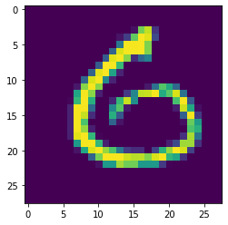
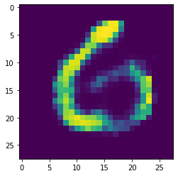
So, great - we have a neural network that can predict the input from the input. Is this useful? Recall that we had an intermediate layer that had 50 activations. Feel free to change this number around and see what happens.
We are compressing 784 pixel values into 50 activations and then reconstructing the image from those 50 values. In other words, we are forcing the neural network to capture only relevant non-linear features that can help it remember what image the input was.
The compression is not perfect as you can see in the reconstructed image above but it’s pretty good. Training for more time or better training methods might improve this.
So how exactly is this useful. Maybe:
Using an autoencoder to do lossy compression. Image storing the 50 activations instead of each image and storing the last layer (the “decoder”) that constructs the image from the 50 activations.
For search: suppose we wanted to search for a target image in a database of N images. We could do N pixel-by-pixel matches but these won’t work because even a slight change in position or orientation or pixel intensities will give misleading distances between images. But if we use the vector of intermediate (50, in this case) activations, then maybe we can do a search in the space of activations. Let’s try that.
#full mnist data
print(mnist_train.data.float().shape)
torch.Size([6000, 28, 28])
Generally it’s a good idea to split the forward function into an encoder and decoder function. Here we do it explicitly.
image_ff_ae.net
Sequential(
(0): Flatten()
(1): Linear(in_features=784, out_features=50, bias=True)
(2): ReLU()
(3): Linear(in_features=50, out_features=784, bias=True)
(4): Sigmoid()
)
Compute the activations after the hidden relu
with torch.no_grad():
mnist_ae_act = image_ff_ae.net[2](image_ff_ae.net[1](image_ff_ae.net[0](mnist_train.data.float())))
mnist_ae_act.shape
torch.Size([6000, 50])
Let’s pick some example image
img_idx = 15 #between 0 and 60000-1
plt.imshow(mnist_train.data[img_idx])
<matplotlib.image.AxesImage at 0x7fb43bb6ddd0>
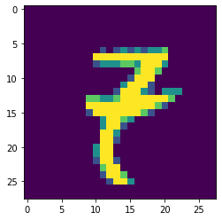
Get the target image activation
target_img_act = mnist_ae_act[img_idx]
target_img_act
tensor([ 0.0000, 0.0000, 344.1409, 0.0000, 1460.8500, 817.6396,
0.0000, 0.0000, 0.0000, 780.8979, 0.0000, 0.0000,
704.9445, 0.0000, 0.0000, 476.1716, 292.7066, 0.0000,
599.8943, 0.0000, 0.0000, 0.0000, 0.0000, 0.0000,
1457.6251, 0.0000, 2844.3250, 0.0000, 0.0000, 0.0000,
605.9978, 61.5421, 0.0000, 2161.3923, 0.0000, 0.0000,
0.0000, 0.0000, 438.2827, 369.7802, 0.0000, 0.0000,
0.0000, 709.2001, 0.0000, 717.5428, 414.9775, 412.0234,
483.0129, 0.0000])
We will use the cosine distance between two vectors to find the nearest neighbors.
Question: Can you think of an elegant matrix-operation way of implementing this (so it can also run on a GPU)?
Warning: Always keep an eye out for memory usage. The full matrix of pairwise distances can be very large. Work with a subset of the data (even 100 images) if that’s the case.
#to save memory, look at only first N images (1000 here)
mnist_ae_act = mnist_ae_act[0:1000, :]
The cosine distance between two points, $\vec{x}_i, \vec{x}_j$ is:
Now we can first normalize all the actiation vector so they have length 1.
torch.pow(mnist_ae_act, 2).sum(dim=1).shape
torch.Size([1000])
We can’t divide a tensor of shape [60000, 50] (activations) by a tensor of shape [60000].
So first we have to unsqueeze (add an additional dimension) to get a shape [60000,1] and then broadcast/expand as the target tensor.
We should check that the first row contains the length of the first image’s activations.
torch.pow(mnist_ae_act, 2).sum(dim=1).unsqueeze(1).expand_as(mnist_ae_act)
tensor([[14569491., 14569491., 14569491., ..., 14569491., 14569491.,
14569491.],
[26621508., 26621508., 26621508., ..., 26621508., 26621508.,
26621508.],
[44020636., 44020636., 44020636., ..., 44020636., 44020636.,
44020636.],
...,
[15814138., 15814138., 15814138., ..., 15814138., 15814138.,
15814138.],
[19887868., 19887868., 19887868., ..., 19887868., 19887868.,
19887868.],
[44205368., 44205368., 44205368., ..., 44205368., 44205368.,
44205368.]])
Now we can divide by the norm (don’t forget the sqrt).
mnist_ae_act_norm = mnist_ae_act / torch.pow(torch.pow(mnist_ae_act, 2).sum(dim=1).unsqueeze(1).expand_as(mnist_ae_act), 0.5)
Let’s check an example.
mnist_ae_act[10]
tensor([ 0.0000, 0.0000, 0.0000, 0.0000, 1373.7821, 1806.4620,
0.0000, 0.0000, 0.0000, 1539.6263, 0.0000, 0.0000,
732.2988, 0.0000, 0.0000, 1489.2239, 389.7503, 425.1606,
990.7882, 0.0000, 0.0000, 0.0000, 0.0000, 1432.6848,
1173.0520, 0.0000, 909.7496, 0.0000, 0.0000, 0.0000,
0.0000, 701.1577, 0.0000, 477.3211, 0.0000, 0.0000,
0.0000, 0.0000, 1125.9907, 1101.0918, 0.0000, 0.0000,
0.0000, 1666.0519, 129.9131, 0.0000, 12.4162, 1514.1362,
1475.1205, 0.0000])
torch.pow(torch.pow(mnist_ae_act[10], 2).sum(), 0.5)
tensor(5129.0112)
mnist_ae_act[10] / torch.pow(torch.pow(mnist_ae_act[10], 2).sum(), 0.5)
tensor([0.0000, 0.0000, 0.0000, 0.0000, 0.2678, 0.3522, 0.0000, 0.0000, 0.0000,
0.3002, 0.0000, 0.0000, 0.1428, 0.0000, 0.0000, 0.2904, 0.0760, 0.0829,
0.1932, 0.0000, 0.0000, 0.0000, 0.0000, 0.2793, 0.2287, 0.0000, 0.1774,
0.0000, 0.0000, 0.0000, 0.0000, 0.1367, 0.0000, 0.0931, 0.0000, 0.0000,
0.0000, 0.0000, 0.2195, 0.2147, 0.0000, 0.0000, 0.0000, 0.3248, 0.0253,
0.0000, 0.0024, 0.2952, 0.2876, 0.0000])
mnist_ae_act_norm[10]
tensor([0.0000, 0.0000, 0.0000, 0.0000, 0.2678, 0.3522, 0.0000, 0.0000, 0.0000,
0.3002, 0.0000, 0.0000, 0.1428, 0.0000, 0.0000, 0.2904, 0.0760, 0.0829,
0.1932, 0.0000, 0.0000, 0.0000, 0.0000, 0.2793, 0.2287, 0.0000, 0.1774,
0.0000, 0.0000, 0.0000, 0.0000, 0.1367, 0.0000, 0.0931, 0.0000, 0.0000,
0.0000, 0.0000, 0.2195, 0.2147, 0.0000, 0.0000, 0.0000, 0.3248, 0.0253,
0.0000, 0.0024, 0.2952, 0.2876, 0.0000])
Good! They are the same. We have confidence that we are normalizing the activation vectors correctly.
So now the cosine distance is:
since all the vectors are of unit length.
Question: How would you compute this using matrix operations?
mnist_ae_act_norm.transpose(1, 0).shape
torch.Size([50, 1000])
mnist_ae_act_norm.shape
torch.Size([1000, 50])
ae_pairwise_cosine = torch.mm(mnist_ae_act_norm, mnist_ae_act_norm.transpose(1,0))
ae_pairwise_cosine.shape
torch.Size([1000, 1000])
ae_pairwise_cosine[0].shape
torch.Size([1000])
img_idx = 18 #between 0 and 60000-1
plt.imshow(mnist_train.data[img_idx])
plt.title("Target image")
#find closest image
top5 = torch.sort(ae_pairwise_cosine[img_idx], descending=True) #or use argsort
top5_vals = top5.values[0:5]
top5_idx = top5.indices[0:5]
for i, idx in enumerate(top5_idx):
plt.figure()
plt.imshow(mnist_train.data[idx])
if i==0:
plt.title("Sanity check : same as input")
else:
plt.title(f"match {i} : cosine = {top5_vals[i]}")
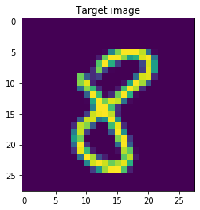
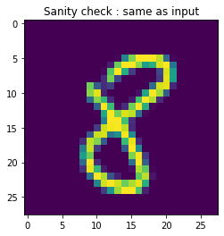
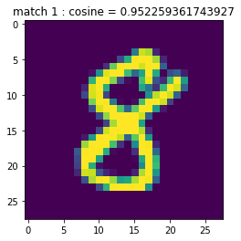
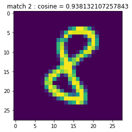
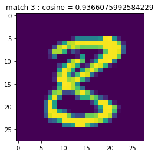
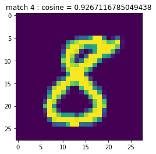
While this is a simple dataset and a simple autoencoder, we already have some pretty good anecdotal similarity searches. There are many variations on autoencoders from switching layers to adding noise to the inputs (denoising autoencoders) to adding sparsity penalties to the hidden layer activations to encourage sparse activations to graphical models called variational autoencoders.
Delete activations and cosine distances to save memory
mnist_ae_act = None
mnist_ae_act_norm = None
ae_pairwise_cosine = None
By now, you have had quite some experience with writing your own neural networks and introspecting into what they are doing. We still haven’t touched topics like recurrent neural networks, seq2seq models and more modern applications. They will get added to this notebook so if you are interested, please revisit the repo.
Real problems
MNIST + autoencoder (convnet)
Trip Classification:
Maybe?
RNN toy problems
Linear trend + noise
Different data structuring strategies
Quadratic trend + noise
LSTM/GRUs for same problems
Seq2Seq examples
RNN Autoencoder
What data?
Note: You might have run into memory issues by now. Everything below is self contained so if you want to reset the notebook and start from the cell below, it should work.
import torch
import torch.nn as nn
import torch.optim as optim
import matplotlib.pylab as plt
import pandas as pd
import numpy as np
from sklearn.neural_network import MLPClassifier, MLPRegressor
import copy
device = torch.device("cuda:0" if torch.cuda.is_available() else "cpu")
print(device)
As before, let’s generate some toy data.
def generate_rnn_data(N_examples=1000, noise_var = 0.1, lag=1, seed=None):
if seed is not None:
np.random.seed(seed)
ts = 4 + 3*np.arange(N_examples) + np.random.normal(0, noise_var)
features = ts[0:len(ts)-lag]
target = ts[lag:]
return features, target
features, target = generate_rnn_data()
This data is possibly the simplest time-series one could pick (apart from a constant value). It’s a simple linear trend with a tiny bit of gaussian noise. Note that this is a non-stationary series!
plt.plot(features, 'p')
We want to predict the series at time t+1 given the value at time t (and history).
Of course, we could try using a feed-forward network for this. But instead, we’ll use this to introduce recurrent neural networks.
Recall that the simplest possible recurrent neural network has a hidden layer that evolves in time, $h_t$, inputs $x_t$ and outputs $y_t$.
with outputs:
Since the output is an unbounded real value, we won’t have an activation on the output.
Let’s write our simple RNN. This is not general - we don’t have the flexibility of adding more layers (as discussed in the lecture), bidirectionality etc. but we are in experimental mode so it’s okay. Eventually, you can use pytorch’s in-built torch.nn.RNN class definition.
N_input = 1 #will pass only one value as input
N_output = 1 #will predict one value
N_hidden = 32 #number of hidden dimensions to use
hidden_activation = nn.ReLU()
#define weights and biases
w_hh = nn.Parameter(data = torch.Tensor(N_hidden, N_hidden), requires_grad = True)
w_hx = nn.Parameter(data = torch.Tensor(N_hidden, N_input), requires_grad = True)
w_yh = nn.Parameter(data = torch.Tensor(N_output, N_hidden), requires_grad = True)
b_h = nn.Parameter(data = torch.Tensor(N_hidden, 1), requires_grad = True)
b_y = nn.Parameter(data = torch.Tensor(N_output, 1), requires_grad = True)
#initialize weights and biases (in-place)
nn.init.kaiming_uniform_(w_hh)
nn.init.kaiming_uniform_(w_hx)
nn.init.kaiming_uniform_(w_yh)
nn.init.zeros_(b_h)
nn.init.zeros_(b_y)
hidden_act = hidden_activation(torch.mm(w_hx, torch.ones(N_input, 1)) + \
torch.mm(w_hh, torch.ones(N_hidden, 1)) + \
b_h)
print(hidden_act.shape)
output = (torch.mm(w_yh, hidden_act) + b_y)
print(output.shape)
But the input we’ll be passing will be a time-series
inp_ts = torch.Tensor([1,2,3]).unsqueeze(1).unsqueeze(2)
print(inp_ts.shape)
inp_ts[0]
inp_ts[0].shape
hidden_act = torch.zeros(N_hidden, 1)
#-----------first iter--------
hidden_act = hidden_activation(torch.mm(w_hx, inp_ts[0]) + \
torch.mm(w_hh, hidden_act) + \
b_h)
print(hidden_act.shape)
output = (torch.mm(w_yh, hidden_act) + b_y)
print(output)
#-----------second iter--------
hidden_act = hidden_activation(torch.mm(w_hx, inp_ts[1]) + \
torch.mm(w_hh, hidden_act) + \
b_h)
print(hidden_act.shape)
output = (torch.mm(w_yh, hidden_act) + b_y)
print(output)
#-----------third iter--------
hidden_act = hidden_activation(torch.mm(w_hx, inp_ts[2]) + \
torch.mm(w_hh, hidden_act) + \
b_h)
print(hidden_act.shape)
output = (torch.mm(w_yh, hidden_act) + b_y)
print(output)
hidden_act = torch.zeros(N_hidden, 1)
for x in inp_ts: #input time-series
hidden_act = hidden_activation(torch.mm(w_hx, x) + \
torch.mm(w_hh, hidden_act) + \
b_h)
print(hidden_act.shape)
output = (torch.mm(w_yh, hidden_act) + b_y)
print(output)
class RNN(nn.Module):
def __init__(self, N_input, N_hidden, N_output, hidden_activation):
super(RNN, self).__init__()
self.N_input = N_input
self.N_hidden = N_hidden
self.N_output = N_output
self.hidden_activation = hidden_activation
#define weights and biases
self.w_hh = nn.Parameter(data = torch.Tensor(N_hidden, N_hidden), requires_grad = True)
self.w_hx = nn.Parameter(data = torch.Tensor(N_hidden, N_input), requires_grad = True)
self.w_yh = nn.Parameter(data = torch.Tensor(N_output, N_hidden), requires_grad = True)
self.b_h = nn.Parameter(data = torch.Tensor(N_hidden, 1), requires_grad = True)
self.b_y = nn.Parameter(data = torch.Tensor(N_output, 1), requires_grad = True)
self.init_weights()
def init_weights(self):
nn.init.kaiming_uniform_(self.w_hh)
nn.init.kaiming_uniform_(self.w_hx)
nn.init.kaiming_uniform_(self.w_yh)
nn.init.zeros_(self.b_h)
nn.init.zeros_(self.b_y)
def forward(self, inp_ts, hidden_act=None):
if hidden_act is None:
#initialize to zero if hidden not passed
hidden_act = torch.zeros(self.N_hidden, 1)
output_vals = torch.tensor([])
for x in inp_ts: #input time-series
hidden_act = self.hidden_activation(torch.mm(self.w_hx, x) + \
torch.mm(self.w_hh, hidden_act) + \
self.b_h)
output = (torch.mm(self.w_yh, hidden_act) + self.b_y)
output_vals = torch.cat((output_vals, output))
return output_vals, hidden_act
rnn = RNN(N_input, N_hidden, N_output, hidden_activation)
output_vals, hidden_act = rnn(inp_ts)
print(output_vals)
print("---------")
print(hidden_act)
So far so good. Now how do we actually tune the weights? As before, we want to compute a loss between the predictions from the RNN and the labels. Once we have a loss, we can do the usual backpropagation and gradient descent.
Recall that our “features” are:
Our “targets” are:
if the lag argument in generate_rnn_data is 1. More generally, it would be:
Now, let’s focus on the operational aspects for a second. In principle, you would first feed $x_1$ as an input, generate an estimate for $\hat{x}_2$ as the output.
Ideally, this would be close to the actual value $x_2$ but that doesn’t have to be the case, especially when the weights haven’t been tuned yet. Now, for the second step, we need to input $x_2$ to the RNN. The question is whether we should use $\hat{x}_2$ or $x_2$.
In real-life, one can imagine forecasting a time-series into the future given values till time t. In this case, we would have to feed our prediction at time t, $\hat{x}{t+1}$ as input at the next time-step since we don’t know $x{t+1}$.
The problem with this approach is that errors start compounding really fast. While we might be a bit off at $t+1$, if our prediction $\hat{x}{t+1}$ is inaccurate, then our prediction $\hat{x}{t+2}$ will be even worse and so on.
In our case, we’ll use what’s called teacher forcing. We’ll always feed the actual known $x_t$ at time-step t instead of the prediction from the previous time-step, $\hat{x}_t$.
Question: Split the features and target into train and test sets.
N_examples = len(features)
TRAIN_PERC = 0.70
TRAIN_SPLIT = int(TRAIN_PERC * N_examples)
features_train = features[:TRAIN_SPLIT]
target_train = target[:TRAIN_SPLIT]
features_test = features[TRAIN_SPLIT:]
target_test = target[:TRAIN_SPLIT]
plt.plot(np.concatenate([features_train, features_test]))
plt.plot(features_train, label='train')
plt.plot(np.arange(len(features_train)+1, len(features)+1), features_test, label='test')
plt.legend()
criterion = nn.MSELoss()
optimizer = optim.Adam(rnn.parameters(), lr=1e-3)
N_input = 1 #will pass only one value as input
N_output = 1 #will predict one value
N_hidden = 32 #number of hidden dimensions to use
hidden_activation = nn.ReLU()
rnn = RNN(N_input, N_hidden, N_output, hidden_activation)
features_train = torch.tensor(features_train).unsqueeze(1).unsqueeze(2)
target_train = torch.tensor(target_train).unsqueeze(1).unsqueeze(2)
features_test = torch.tensor(features_test).unsqueeze(1).unsqueeze(2)
target_test = torch.tensor(target_test).unsqueeze(1).unsqueeze(2)
output_vals, hidden_act = rnn(features_train.float())
print(len(output_vals))
print(len(target_train))
loss = criterion(torch.tensor(output_vals).double(), target_train.squeeze(2).squeeze(1))
loss.requires_grad = True
print(loss)
optimizer.zero_grad()
loss.backward()
optimizer.step()
We can now put all these ingredients together
N_input = 1 #will pass only one value as input
N_output = 1 #will predict one value
N_hidden = 4 #number of hidden dimensions to use
hidden_activation = nn.Tanh()
rnn = RNN(N_input, N_hidden, N_output, hidden_activation)
criterion = nn.MSELoss()
optimizer = optim.Adam(rnn.parameters(), lr=1e-1)
N_epochs = 10000
hidden_act = None
for n in range(N_epochs):
output_vals, hidden_act = rnn(features_train.float(), hidden_act = None)
loss = criterion(output_vals, target_train.squeeze(1).float())
#loss.requires_grad = True
optimizer.zero_grad()
loss.backward()
optimizer.step()
if n % 100 == 0:
print(rnn.w_yh.grad)
print(f'loss = {loss}')
print(output_vals.requires_grad)
output_vals.shape
criterion(output_vals, target_train.squeeze(1).float())
features_train[0:10]
plt.plot([i.item() for i in output_vals])
plt.plot([i[0] for i in target_train.numpy()])
rnn.w_hh.grad
optimizer.zero_grad()
loss.requires_grad = True
loss.backward()
optimizer.step()
rnn.w_hh
rnn.w_hx.grad